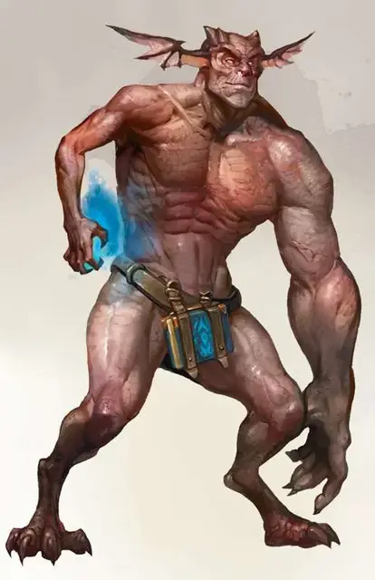

Ягнолот
Yagnoloth
Большое Исчадие (Юголот), нейтрально-злое

Класс Доспеха 17 (природный доспех)
Хиты 147 (14к10 + 70)
Скорость 40 футов
| мод | спас | ||
|---|---|---|---|
| СИЛ | 19 | +4 | +4 |
| ЛОВ | 14 | +2 | +6 |
| ТЕЛ | 21 | +5 | +5 |
| мод | спас | ||
|---|---|---|---|
| ИНТ | 16 | +3 | +7 |
| МДР | 15 | +2 | +6 |
| ХАР | 18 | +4 | +8 |
Навыки Восприятие +6, Обман +8, Проницательность +6, Убеждение +8
Сопротивление урону огонь, холод, электричество; дробящий, колющий, рубящий от немагических атак
Иммунитет к урону кислота, яд
Иммунитет к состояниям отравление
Чувства слепое зрение 60 футов, тёмное зрение 60 футов, пассивное Восприятие 16
Языки Бездны, Инфернальный, Телепатия 60 фт.
Опасность 11 (7200 опыта)
Бонус мастерства +4
Среда обитания Город
Особенности
Врождённое колдовство. . Базовой характеристикой ягнолота является Харизма (Сл спасброска от заклинания 16). Он может накладывать следующие заклинания, не нуждаясь в материальных компонентах:
• Неограниченно: тьма [darkness], обнаружение магии [detect magic], рассеивание магии [dispel magic], невидимость [invisibility] (только на себя) , внушение [suggestion]
• 3/день: молния [lightning bolt]
Сопротивление магии. Ягнолот совершает с преимуществом спасброски от заклинаний и прочих магических эффектов.
Магическое оружие. Атаки оружием ягнолота являются магическими.
Действия
Мультиатака. Ягнолот совершает атаку массивной рукой и одну атаку электрическим касанием, или совершает одну атаку массивной рукой и телепортацию после атаки.
Электрическое касание. Рукопашная атака оружием: +8 к попаданию, досягаемость 5 фт., одна цель. Попадание: 27 (6к8) урона электричеством.
Массивная рука. Рукопашная атака оружием: +8 к попаданию, досягаемость 15 фт., одна цель. Попадание: 23 (3к12 + 4) дробящего урона. Если целью является существо, оно должно преуспеть в спасброске телосложения Сл 16, иначе станет ошеломлённым до конца следующего хода ягнолота.
Вытягивание жизни. Ягнолот прикасается к одному недееспособному существу в пределах 15 фт. от себя. Цель получает 36 (7к8 + 4) урона некротической энергией, а ягнолот получает временные хиты в количестве, равном половине причинённого таким образом урона. Цель должна преуспеть в спасброске Телосложения Сл 16, иначе её максимальное значение хитов уменьшится на значение причинённого ей урона. Уменьшение хитов длится до завершения продолжительного отдыха целью, и цель умирает, если её максимальное значение хитов будет уменьшено до 0.
Коварное ведение боя (перезарядка 4-6). До двух союзников ягнолота в пределах 60 фт. от него, которые могут его слышать, используют свою реакцию, чтобы совершить по одной рукопашной атаке каждый.
Телепортация. Ягнолот магическим образом телепортируется вместе со всем снаряжением, которое он несёт или носит, в свободное пространство в пределах 60 фт. от себя, которое он может видеть.
Описание
Любой, кто хотел бы заключить сделку с юголотами, обычно попадает к ягнолоту. Хитроумные переговорщики, эти странные исчадия занимаются заключением контактов за весь свой род. Когда ягнолот нанимается, он сообщает намерения заказчика прочим исчадиям в виде приказов.
Хотя им поручено управлять низшими юголотами, ягнолоты полностью подчиняются приказам арканолотов и ультролотов. Но, если не брать во внимание их место в иерархии, ягнолоты обладают полнотой власти и ожидают подчинения и повиновения от прочих исчадий.
У ягнолота имеется одна рука человеческого размера, а другая – подобно руке гиганта, он всегда закрывает одну из них длинным плащом. Во время переговоров открывает человеческую руку, и использует её для составления и подписания контрактов. Когда необходимо показать силу, или проявить себя в бою, он выбрасывает плащ и раскрывает свою зверскую, мощную гигантскую руку.